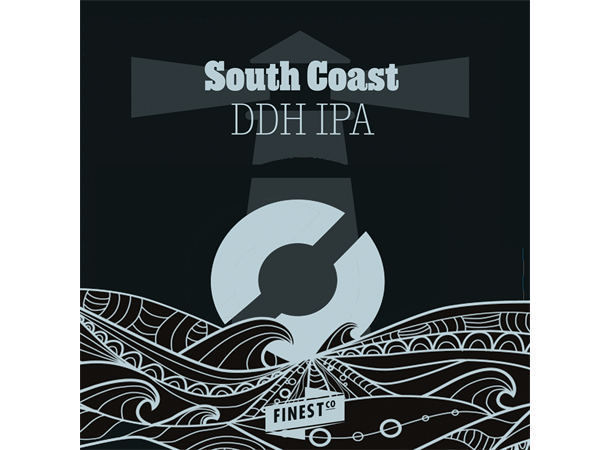

_ _ _______ _______ ________ _______ ___. __________ .__
__| || |_\ _ \ \ _ \/ __ \ \ \ _______ __ ____ _____\_ |__ ___________ \______ \_____ |__| ____
\ __ / /_\ \/ /_\ \____ / ______ / | \ / _ \ \/ // __ \ / \| __ \_/ __ \_ __ \ | _/\__ \ | |/ \
| || |\ \_/ \ \_/ \ / / /_____/ / | ( <_> ) /\ ___/| Y Y \ \_\ \ ___/| | \/ | | \ / __ \| | | \
/_ ~~ _\\_____ /\_____ //____/ \____|__ /\____/ \_/ \___ >__|_| /___ /\___ >__| |____|_ /(____ /__|___| /
|_||_| \/ \/ \/ \/ \/ \/ \/ \/ \/ \/

South Coast er en klassisk amerikansk IPA i kjent
Nøgne Ø stil. Fullpakket med kjente "tungvektere"
Centennial, Chinook, Simcoe og Nelson Sauvin
sørger for herlige tropiske smaker, sitrus og
furunål med god bitterhet. Alt dette i kombinasjon
med en elegant maltkropp som gjør ølet svært
forfriskende. Ønsker du å brygge en så autentisk
Nøgne Ø øl som mulig anbefaler vi å gå for flytende
gjær av WLP007, som er Nøgne Ø sitt husgjær.
- - - - - - - - - - - - - - - - - - - - - - - - - - -
ABV: 7,4%
Antall flasker: 40
Bryggmester: Eirik
Bryggedag: 17.10.2021
Flaskedato: 01.11.2021
Drikkeklar: 29.11.2021